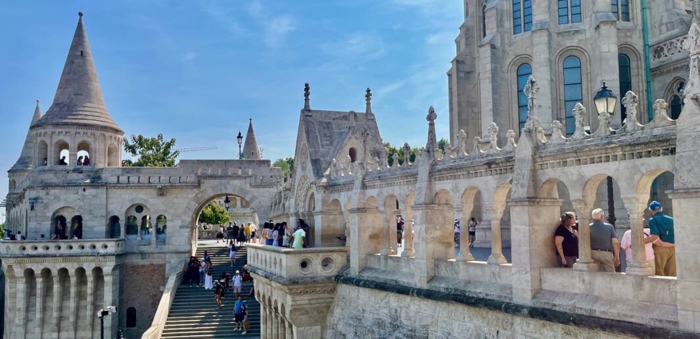
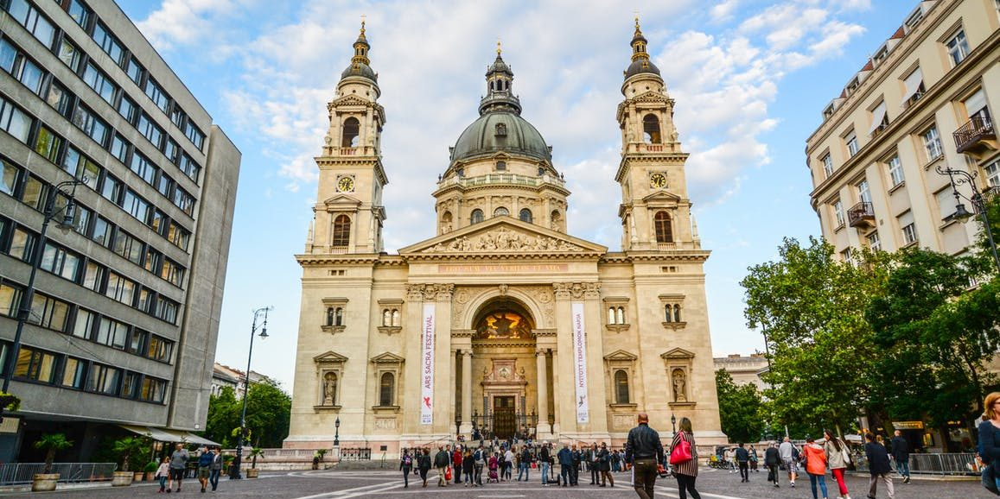

Budapeste, a capital da Hungria, é uma cidade rica em história, cultura e beleza arquitetônica. Dividida pelo rio Danúbio, a cidade é composta por duas partes principais: Buda, com suas colinas e castelos, e Peste, com sua vida urbana vibrante. Budapeste é famosa por seus banhos termais, como os Banhos Széchenyi, e por sua impressionante arquitetura, incluindo o Parlamento Húngaro e a Ponte Széchenyi. A cidade também oferece uma cena gastronômica diversificada, com pratos tradicionais como o goulash e os famosos doces húngaros.

Na imagem acima, podemos ver o icônico Parlamento Húngaro, um dos símbolos mais reconhecíveis de Budapeste, iluminado à noite, oferecendo uma vista deslumbrante e romântica da cidade.

Na imagem acima, podemos ver o Fisherman's Bastion, outro ícone de Budapeste, que homenageia aqueles que lutaram e morreram pela cidade durante a Revolução Francesa e as Guerras Napoleônicas.

Na imagem acima, podemos ver a Basilica de Santo Estêvão, um dos exemplos mais notáveis da arquitetura gótica, famosa por seus vitrais deslumbrantes e sua história rica, incluindo eventos como a coroação de Napoleão Bonaparte.
Assim como Nova York, Tóquio também é conhecida por sua arte e cultura.
Quer saber mais sobre Budapeste? Clique aqui